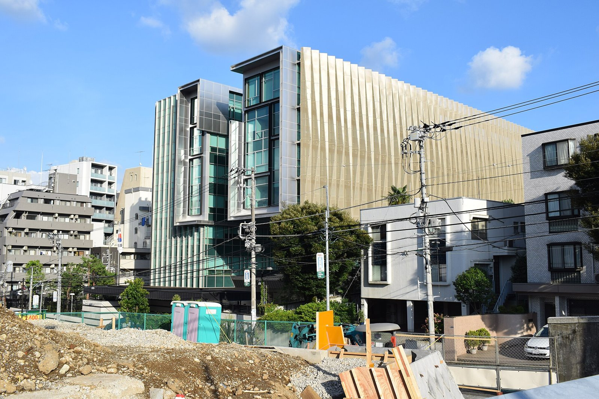

[한일수교 60년 번외③] 고시엔 우승 학교에도 초등 과정이 없다, 2026년에도 그대로다
민단계 한국학교 여섯 곳 가운데 초등 과정이 있는 곳은 세 곳뿐이다
교토국제고는 2024년 고시엔을 우승했는데 학생 159명 가운데 약 70%가 일본인이다
2026년 두 차례 정상회담에서도 재일 한국학교 교육은 의제에 오르지 않았다
AI경세제민=김갑봉 기자 | 2024년 8월 23일 교토국제고가 고시엔에서 처음 우승했다. 한국어 교가가 일본 전국에 중계됐다. 그 학교의 재정과 교육 과정을 들여다보면 다른 사실이 나온다.

※ 이 연재는 2025년 인천투데이에 실린 「한일수교 60년」 연재를 잇는다. 논지는 이어받되 수치와 사실은 2026년 10월 기준으로 다시 확인해 썼다.
세 갈래의 학교
일본의 한반도 관련 학교는 세 갈래다. 총련계 조선학교, 민단이 세운 한국계 학교, 그리고 한국 정부가 인정한 도쿄한국학교다.
조선학교는 전국에 약 60곳이 있었고 대부분 초등 과정을 둔다. 민단계 한국학교는 여섯 곳이다. 건국학교(1946년), 금강학교(1946년), 교토국제학교(1947년), 도쿄한국학교(1954년), 청구학원쓰쿠바(1950년대), 코리아국제학원(2008년)이다.
일본 학교교육법상 정규학교 지위를 가진 곳은 건국(1949년), 금강(1985년), 교토국제(2003년), 청구학원(2014년)이다. 도쿄한국학교와 코리아국제학원은 각종학교다.
초등 과정이 없다는 사실
여섯 곳 학생은 모두 합쳐 약 3000명으로 추산된다. 건국학교가 2023년 452명, 교토국제학교가 159명이었다.
초등 과정을 둔 곳은 건국, 금강, 도쿄한국학교 세 곳이다.
한글은 초등 단계에서 익히지 않으면 뒤에 따라잡기 어렵다. 전 오사카 총영사는 초기 한글 교육이 비어 있다는 점을 지적하며 교육부의 지원이 필요하다고 했다.
조선학교는 대부분 초등 과정이 있고 한국계 학교는 절반에만 있다. 재일 한국 국적자가 한글을 배우려면 총련계 학교로 가야 하는 경우가 생긴다.
교토국제고의 사정
야구부 사정이 그 학교의 재정을 말해 준다. 공이 닳아 없어지고 운동장이 사다리꼴이다. 좌측 70미터, 우측 60미터다. 동포 사회가 약 5억원을 모았다. 기아 타이거즈의 심재학이 공 1000개를 기부했다.
학생 159명 가운데 61명이 야구부다. 전교생의 약 70%가 일본인이다.
한국계 학교가 국제학교로 바뀌어 간다는 진단이 여기서 나온다. 민족교육 기관으로 세워진 학교가 운영을 유지하려면 일본인 학생을 받아야 한다. 받으면 교육 과정의 중심이 옮겨간다.
우승은 자랑스럽고 구조는 그렇지 않다.
2024년 말의 숫자
일본에 사는 한국 국적자는 2024년 말 기준 약 41만명이다. 조선적은 약 2만3000명이다.
41만명의 자녀가 한글 교육을 받을 수 있는 초등 과정이 세 곳이다. 이 비율이 문제의 전부다.
2026년 10월 기준으로 갱신된 학생 수와 학교 수를 확인하지 못했다. 학교의 수와 과정 구성에 변동이 있었다는 보도도 확인하지 못했다.
2025년과 2026년의 정상회담
2025년 8월 23일 도쿄 한일 정상회담의 공동문서에 워킹홀리데이 확대가 들어갔다. 재일 한국학교 교육은 들어가지 않았다.
2026년 1월 13일 나라 회담과 5월 19일 안동 회담에서도 합의 항목은 액화천연가스와 원유 공급 협력, 핵심광물 공급망, 호르무즈 해협 항행, 안보정책협의회 차관급 격상, 조세이 탄광 유골 DNA 감정 절차였다. 재일 한국학교는 없다.
이재명 대통령은 2026년 1월 14일 호류지를 본 뒤 간사이 지역 동포를 만났다. 간담회는 있었고 의제는 없었다.
왜 의제가 되지 않는가
가. 일본 정부의 사안이 아니다
민단계 한국학교의 운영은 일본 정부가 보조금을 주는 부분을 빼면 기본적으로 한국 쪽 사안이다. 일본에 요구할 항목이 적다. 그래서 정상회담 의제로 올릴 동기가 작다.
나. 한국 정부 안에서 부처가 갈린다
재외동포청의 지원 사업이 있고 교육부의 재외교육기관 포털이 있다. 두 경로가 따로 돈다. 초등 과정 신설과 교원 파견은 예산과 인력이 함께 걸리는 사업이어서 한 부처가 결정하기 어렵다.
다. 규모가 작다
학생 약 3000명이다. 정책 우선순위에서 밀린다.
그래도 해야 하는 까닭
가. 비용이 작다
세 곳에 초등 과정을 더하는 사업은 국가 예산에서 큰 항목이 아니다. 교원 파견과 교재 지원과 시설 보수가 전부다.
나. 효과가 길다
초등 단계에서 한글을 익힌 아이는 평생 한국어를 쓴다. 성인기에 배운 사람과 다르다. 재외동포 정책에서 투입 대비 지속 효과가 가장 큰 구간이다.
다. 지금 해야 한다
재일동포 사회는 세대 교체를 지나고 있다. 한국어를 쓰는 조부모 세대가 줄어든다. 가정에서 익히는 경로가 닫히면 학교만 남는다.
제안
하나, 민단계 여섯 곳 가운데 초등 과정이 없는 세 곳에 대해 신설 타당성을 조사할 것. 교토국제학교처럼 일본인 학생 비율이 높은 곳은 별도 설계가 필요하다.
둘, 재외동포청과 교육부의 지원 창구를 하나로 묶을 것. 학교가 두 곳에 따로 신청하는 구조를 정리한다.
셋, 한일 교육 당국 협의에 이 사안을 올릴 것. 2026년 5월 안보정책협의회가 차관급으로 올라간 것처럼 교육 협의도 격을 정해 두면 의제가 남는다.
고시엔 우승은 한 해의 일이다. 초등 과정은 한 세대의 일이다.
참고문헌
재외동포청, 재일 한국계 학교 현황 및 지원 사업
교육부, 재외교육기관 포털 자료
일본 출입국재류관리청, 재류외국인 통계, 2024년 12월
대한민국 대통령실, 한일 정상회담 결과 발표, 2026년 1월·5월
인천투데이, 「한일수교 60년 번외③」, 2025년 9월 28일
※ 이 기사는 AI 프로그램 클로드를 활용해 작성했습니다.
관련기사
- [한일수교 60년 번외④] 조선학교 55곳, 학생 6000~8000명… 한국 국적 학생이 다닌다
- [한일수교 60년 번외②] 셋으로 갈라진 재일동포, 2026년의 자리
- [한일수교 60년 번외⑤] 일본 언론이 걱정한 것은 한일관계였고, 터진 것은 중일관계였다
- [한일수교 60년 번외①] 대사관도 동포가 지었다, 재일 한국공관 9개의 내력
저작권자 © AI경세제민 무단전재 및 재배포, AI학습 및 활용 금지